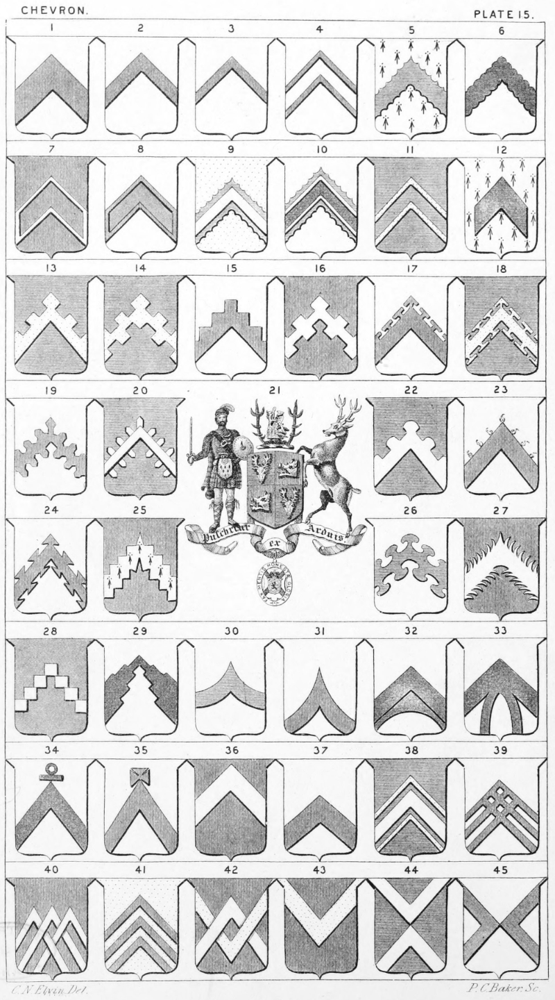

Plate 15.

Plate 15.
- Ar. a Chevron gu.
- Chevronel
- Couple close
- Two Couple closes
- Chevron Engrailed
- Chevron Invecked
- Chevron Recoursie
- Chevron Bordered, or Fimbriated
- Chevron Engrailed. Or. a chev. engrailed az. Charged, or surmounted of another ar.
- Chevron voided of another engrailed
- Chevron voided. Az. a chev. or voided
of the field
- Chevron Humettée
- Chevron Embattled
- Chevron Embattled counter-embattled
- Chevron Grady
- Chevron Bretessed
- Chevron Potent
- Chevron Potent counter-potent
- Chevron Urdée, or Champaine
- Chevron Urdée-Champained
- Arms of a Baronet of Scotland or
Nova Scotia Baronet. See Nova
Scotia Baronet
- Chevron Embattled arondie
- Chevron Flamant on the upper side
- Chevron Dovetailed
- Chevron Indented
- Chevron Nebulee
- Chevron Indented embowed, or
Hacked and Hewed
- Chevron Grady on both sides
- Chevron Griece, or Double escartelee
- Chevron Embowed
- Chevron In Point embowed
- Chevron Enarched
- Chevron Enarched
- Chevron Potent, ringed at the top
- Chevron Pattee at the top, or a Chevron
ensigned on the top with a
Cross-pattee
- Chevron Enhansed, or Enhanced
- Chevron In Base
- Chevron Cottised. This may be blazoned
az. a chev. ar. betw. two couple
closes or
- Chevron Triparted, or Treble-parted
Three Chevrons, or chevronels
- Chevron braced, or interlaced
- Three chevronels
- Gu. two Chevrons in Fret, or Fretted,
the upper one or, the other ar.
It may be blazoned ; gu. a chev.
ar. interlaced with another re-
versed or
- Chevron Reversed
- Two Chevrons in counter-point
- Two Chevrons couched, dexter
and sinister